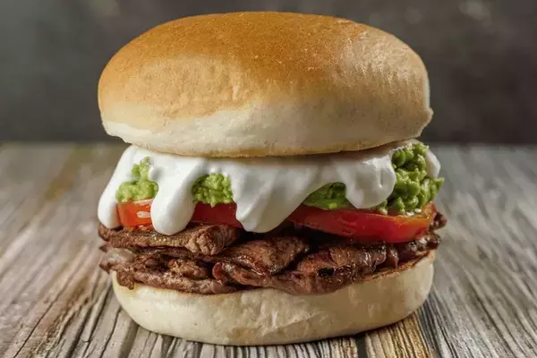

Italian Churrasco

Description
Not Italian at all!! Amazing Chilean Sandwich.
ideal for the evening with a beer.
Ingredients:
- Frica bread (can be other similar kinds also)
- Tomato
- Avocado
- Home made mayonaise (add garlic for perfect flavor)
- Thin sliced cow meat
Steps
- Fry the meat in a very hot pan
- Cut the tomato into slices
- Mash the avocado with a fork until smooth
- Put the meat on top of the bottom part of the bread
- Add the tomato, the avocado and the mayonnaise
Home